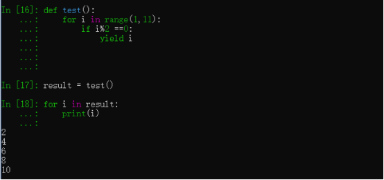

原文连接:https://www.cnblogs.com/huangguifeng/p/11431033.html
小白：大牛哥，刚才看到有一个函数不使用return返回结果，而是使用yield关键字返回结果,看不太明白，Python中yield关键字的用途是什么,它有什么作用呀？
大牛: 要想理解yield的作用，你必须了解什么是生成器(generators)，了解生成器之前(generators)你需要先去了解什么是可迭代对象(iterables)。
大牛：小白啊，今天你大牛哥我刚好有空，给你说道说道这个yield的作用。让你开开眼界，看看我大牛都是怎么写出牛逼代码的。
小白：好呀好呀！！！
大牛：我们先来看看什么是可迭代对象(iterables)。
当你创建了一个列表，你可以遍历这个列表读取它的每一个元素，逐个读取列表元素的过程称为迭代(iteration)。
上面代码中 mylist 就是可迭代对象(iterables),使用列表推导式生成的对象也是可迭代对象
向这种可以使用for ... in .. 语法去迭代的对象都是可迭代对象。
大牛：小白，明白什么是可迭代对象了吗？你来说一说Python里面有那些常见的可迭代对象。
小白：明白了。可以使用for...in...获取里面元素的对象就是可迭代对象，像字典，列表，元组，字符串都是可迭代对象。大牛哥我说的没错吧！
大牛：给你32个赞！！不错，一点就通。知道什么是可迭代对象后继续来看生成器(generators)。
生成器是迭代器(iterators)，但是只能迭代一次，生成器不会将所有值存储在内存中，而是实时的生成这些值：
将列推导式的 [] 改成了 () 其他并没有做任何改变，但是mygenerators已经不是列表，而是生成器。生成器迭代一次之后就不能再次迭代。计算出0，然后并不保存结果和状态继续计算出1，最后计算出4，逐一生成。
这只是创建生成器的一种方式，另外一种方式就是我们今天的主角yield关键字。

yield 是一个类似 return 的关键字。当我们调用这个函数的时候并不是返回计算的结果，而是返回一个生成器。只有迭代这个生成器的时候才会计算结果。
for i in mygenerator:第一次循环的时候函数执行到yield关键字位置，返回 i*i的值，然后将函数挂起(保存函数执行的状态)。for i in mygenerator:第二次循环的继续执行刚才的函数(挂起的位置)，也就是执行生成器里面的for循环，返回i*i的值，然后再次将函数挂起。直到生成器里没有值可以返回就结束。
yield 可以返回值，但是不会结束函数的执行，如果函数后面还有代码，同样是可以执行的。
上面的函数其实没有什么作用，只是用来演示生成器用法。生成器在那些地方会用到呢？
比如需要创建一个非常大的列表直接使用列表推导式可能会导致内存被耗尽，这代码是创建不了列表，电脑内存不足以保存这个列表。
但是用生成器可以创建成功，需要使用的时候再从生成器中取出。
对比下面这两段代码：求1-10的偶数
大部分人的写法是这样的
大牛的写法是这样子的

同样的功能，但是用生成器要简便很多。
yield 的好处：
1.不会将所有数据取出来存入内存中；而是返回了一个对象；可以通过对象获取数据；用多少取多少，可以节省内存空间。
2.除了能返回一个值，还不会终止循环的运行
大牛：咳咳！一口气讲了这么多，差点就要把大牛我累挂了。小白同学，听明白了吗？
小白：哦，原来yield是这么个用法。谢谢大牛哥！经大牛哥这么一说，我发现以前我写的代码很多都可以用yield写成生成器啊！就拿你上面求偶数例子吧，采用yield的写法效率是否比普通写法高呢？
大牛：效率肯定比较高的，看下面的对比
|
def test():
|
0.8925411701202393 # 生成器写法耗时
1.1444191932678223 # 普通写法耗时
小白：哇！老板就经常嫌弃我写的代码执行效率低，每次我都是拿Python本身执行效率就比较低的理由去搪塞老板，原来还可以在这些细节上做优化的。
小白：听大牛哥一席话，胜读一本Python核心编程。老板叫我回去改BUG了 emememem。
大牛：坐看庭前花开花落，笑看天边云卷云舒。泡一杯咖啡，坐等下班。
产品经理：大牛，你写的代码又出BUG了，还不赶紧回来看看。你是不想下班了吧！
大牛：哎，来了，来了。